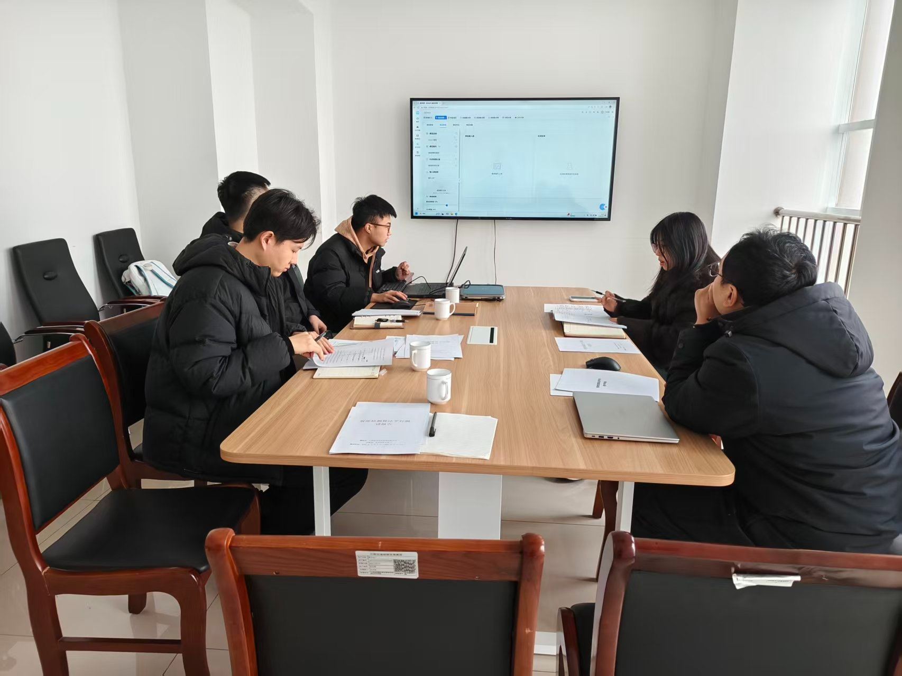

实验室简介
计算机视觉与模式识别实验室依托曲阜师范大学计算机学院，围绕计算机视觉、模式识别、深度学习与智能感知开展研究。实验室重点关注精准农业与植物病害检测、遥感目标检测、医学图像分析和红外目标检测，结合算法研究与场景应用开展研究生培养与学术交流。
研究特色
面向真实场景中的小目标、细粒度差异、多尺度变化和复杂背景，研究注意力引导特征融合、Transformer 检测、实例分割与领域对比学习等方法。
- 精准农业与植物病害检测：复杂自然场景下的作物病害、虫害与生长状态智能感知
- 遥感目标检测：高分辨率遥感图像中的小目标、密集目标与复杂背景识别
- 医学图像分析：低剂量 CT 去噪、医学图像重建与智能辅助分析
- 红外目标检测：低对比度、弱纹理与复杂环境下的红外视觉感知
实验室环境与学术交流


发展历程
2020 年，实验室正式成立，首批研究生入学。